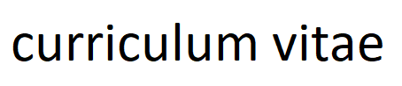

Telephone: 075 7456 5319
Email: bejanbogdan93@gmail.com
2022 Introduction to HTML5, CSS3 and JavaScript
University of Michigan (Coursera.org) Certificates available if required
Self-taught: Python (Django), Front-End templates Confluence, Jira, GitHub Photoshop
2019 – 2021 MSc Electrical and Electronic Engineering University of Greenwich
Turn my CV into a webpage (Current project). With this project I am using HTML, CSS and JS to design and develop a webpage that will represent my CV. It is an ongoing personal project idea, on the basis of which I will practice my web developing skills and also expand my knowledge.
To view the page, please access https://bejanbogdan93.github.io/ .
Mailbox. By the use of Python web framework – Django and some extra packages I was able to gather emails from a Google mailbox.
With that information, and a few inputs, I have populated a table that became the Job Board for a translation business.
With this project I have learned to create and configure a website in Visual Studio Code using Django and Python,
to manipulate a page template and also how to use packages.
Project leading. This position involved being a client for a group of 3 web developers working on a complex application. My role was not only to present them my expectations in terms of front-end and back-end but also to coordinate and assign the tasks.
This opportunity enabled me to use Confluence, Jira, Photoshop, in terms of technology, and to develop and practice leadership skills.
Robotics, Electric Cars, Computer vision, Travel, Smart Home.